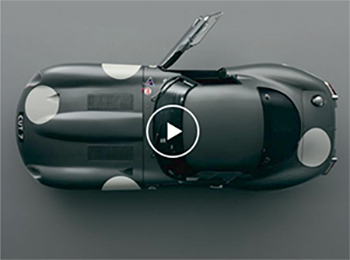
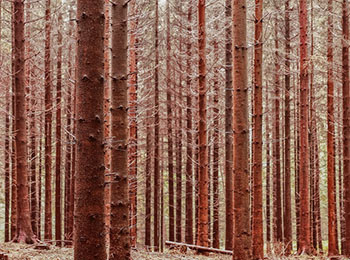

Chronicle is a unique online magazine
for those exploring the world of travel,
science and modern technology.
The magazine takes the reader on an inspirational trip through all aspects of global travel, with some of the best writing and photogtaphy around. In addition, Chronicle reports captivating developments in science, technology and the world around us. There's a lot of world out there to explore, and Chronicle has it covered.
Since launching in early 2014, Chronicle magazine has tracked down extraordinary doers and invited them to share what they've learned along their journey. In it's first year of existence, it was voted the Gold Winner for Best Online Travel Journalism Site by the Society of American Travel Writers Foundation.
Featured Articles
A collection of stories covering remarkable destinations, breathtaking nature, digital science and modern technologies. Featured articles are considered to be the best articles Chronicle has to offer.

Video
Jaguar Brings the 1964 E-Type Racer Back to Life
Made In Britain

Nature
Oldest Muir Woods redwood is only hald its estimated age
Visit California

Travel
Iceland's Ring Road
The Ultimate Road Trip
Adventure
Hiking the Southwest Mountains
Hiker's Guide